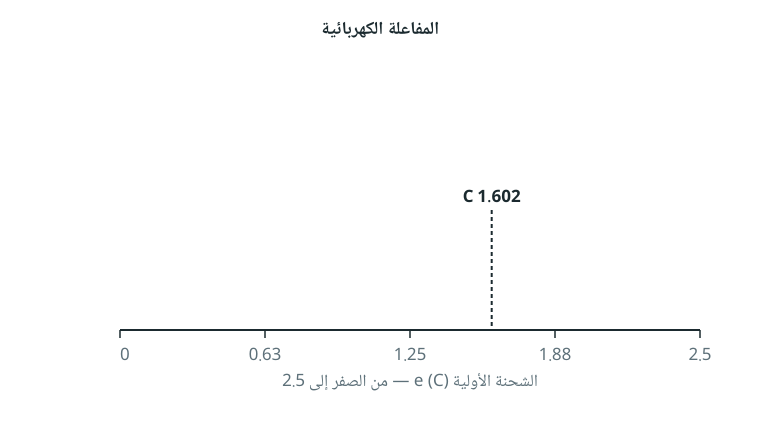

المفاعلة الكهربائية
Electrical reactance
المفاعلة الكهربائية هي الجزء التخييلي من المعاوقة، وتقيس مقاومة المكثف أو الملف لتغيّر التيار دون تبديد طاقة، وتتناسب عكسياً مع التردد في المكثف وطردياً معه في الملف.
المفاعلة X هي الجزء من المعاوقة Z الذي لا يبدد طاقة بل يخزّنها ويعيدها. للمكثف: X_C = 1/(ω·C) = 1/(2π·f·C)، وللملف: X_L = ω·L = 2π·f·L، حيث ω التردد الزاوي بالراديان/ثانية وf بالهرتز. والمعاوقة الكلية في دارة توالٍ: Z = √(R² + (X_L − X_C)²)، وزاوية الطور φ = arctan((X_L − X_C)/R). مثال: مكثف 10 µF عند 50 Hz له X_C = 1/(2π × 50 × 10×10⁻⁶) = 318.3 Ω، وملف 100 mH عند 50 Hz له X_L = 2π × 50 × 0.100 = 31.42 Ω.
كيف تعمل الظاهرة؟
المكثف يخزّن شحنة على لوحيه، فحين يزيد الجهد عليه يتراكم شحنه، وحين ينقص يفرغ. ولأن التيار هو معدل تغيّر الشحنة، فإن التيار في المكثف يتناسب مع معدل تغيّر الجهد لا مع الجهد نفسه. ونتيجة ذلك أن التيار يبلغ ذروته حين يمرّ الجهد بالصفر، أي أنه يتقدم الجهد بربع دورة. والملف يعمل بالعكس: يخزّن الطاقة في مجاله المغناطيسي، ويعارض تغيّر التيار بقوة دافعة عكسية، فيتأخر التيار عن الجهد بربع دورة. وفي الحالتين لا تُبدَّد طاقة صافية: تُخزَّن ثم تُعاد، ولهذا لا تسخن العناصر المثالية.
العلاقة بالأرقام
X_C = 1/(ωC)، X_L = ωL، ω = 2πf. وZ = √(R² + (X_L − X_C)²)، وφ = arctan((X_L − X_C)/R). والرنين عند X_L = X_C أي f₀ = 1/(2π√(LC)). مثال عددي: L = 0.100 H، C = 10×10⁻⁶ F → f₀ = 1/(2π√(1.0×10⁻⁶)) = 1/(2π × 1.0×10⁻³) = 159.15 Hz. وعند 50 Hz: X_L = 31.42 Ω، X_C = 318.3 Ω، X = −286.9 Ω، |Z| = 303.8 Ω.
مفاهيم متقاربة
يُفرَّق بين المفاعلة الحثية والسعوية بالإشارة: X_L موجبة وX_C سالبة في الاصطلاح المركّب، ولهذا تُطرحان. ويُفرَّق بين المفاعلة والممانعة: الممانعة |Z| مقدار موجب دائماً، والمفاعلة قد تكون سالبة. ويُفرَّق بين المفاعلة والقدرة غير الفعّالة: المفاعلة خاصية عنصر بالأوم، والقدرة غير الفعّالة كمية بالأوم-فار (VAR) تصف تبادل الطاقة في الدارة كلها. وأخيراً يُفرَّق بين المفاعلة والمقاومة في التيار المستمر: عند f = 0 يكون المكثف دائرة مفتوحة (X_C لانهائية) والملف قصيراً (X_L = 0).
حدود التطبيق
الصيغ المذكورة تفترض عناصر مثالية خطية، ولا تصح حين تتشبع الملفات (تنقص L عند التيارات العالية) أو حين تتغير سعة المكثف بالجهد أو الحرارة. وفي الترددات العالية تظهر سعات وطفيليات: الملف يصير له سعة بين لفاته فيرنّ، والمكثف تصير له محاثة طرفية. ولا تصح الصيغ في الدارات غير الخطية كالمقومات. وأخيراً المفاعلة لا تصف فقد الطاقة الحقيقي في العناصر الحقيقية، وهو ما تصفه المقاومة الطفيلية المصاحبة.

| الكمية | القيمة | المصدر |
|---|---|---|
| مفاعلة مكثف 10 µF عند 50 Hz | 318.3 Ω | [3] |
المصادر
- 1 CODATA Value: elementary charge — NIST — CODATA 2022 recommended values (2024). physics.nist.gov/cgi-bin/cuu/Value?e · اطُّلع عليه 2026-11-21
- 2 CODATA Value: speed of light in vacuum — NIST — CODATA 2022 recommended values (2024). physics.nist.gov/cgi-bin/cuu/Value?c · اطُّلع عليه 2026-11-21
- 3 CODATA Value: vacuum electric permittivity — NIST — CODATA 2022 recommended values (2024). physics.nist.gov/cgi-bin/cuu/Value?eps0 · اطُّلع عليه 2026-11-21
استشهد بهذا المصطلح
الصيغتان مبنيتان من بيانات الصفحة نفسها: العنوان والتاريخ ورابط النسخة المنشورة.
المفاعلة الكهربائية — Electrical reactance. (2026). ديوان المعرفة — انفراد. https://infiradev.com/diwan/terms/term-electrical-reactance.html
@misc{term-electrical-reactance2026,
title = {المفاعلة الكهربائية},
titleaddon = {Electrical reactance},
howpublished = {{ديوان المعرفة — انفراد} — مرجع علمي عربي},
year = {2026},
url = {https://infiradev.com/diwan/terms/term-electrical-reactance.html},
urldate = {2026-11-26},
note = {مراجعة علمية: hermes (مراجعة معتمدة 2026-11-26)}
}
راجعه: hermes (مراجعة معتمدة 2026-11-26) · 2026-11-26 · آخر تحديث 2026-11-21